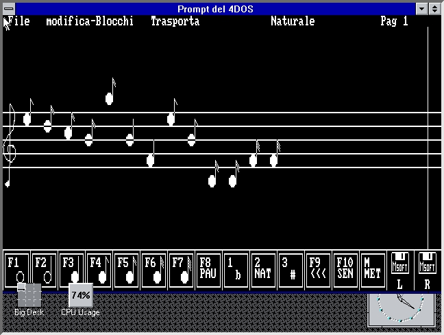

Sound
The sound application was a youth project, i made it when i was 15. It was a full featured music program written in Turbo Pascal and Quick Basic under DOS. With it, it was possible to write notes on a pentagram and then doing thigs like:
- Play the song using then PC internal speaker.
- Load and save songs in its own format.
- Convert the songs in a language like Basic, Pascal or C, to use it to embed music in other applications.
- Transpose notes.
The program also used a mouse interface and a menu bar, other features where than available:
- Cutting and pasting parts of songs.
- Using the mouse to draw notes.
- Choose what page of the song had to be visualized.
That’s how it looked like: 
Its introductory music was programmed using the program itself. It was a great project to learn programming and music.